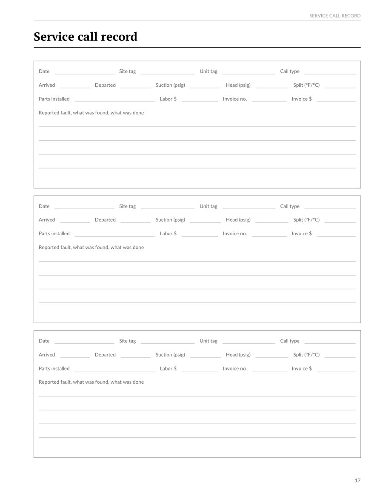
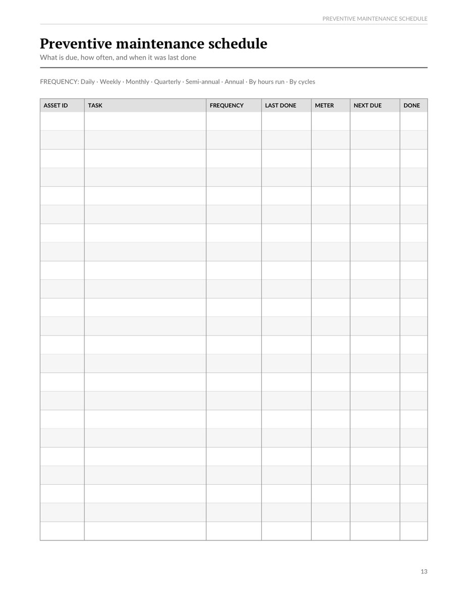
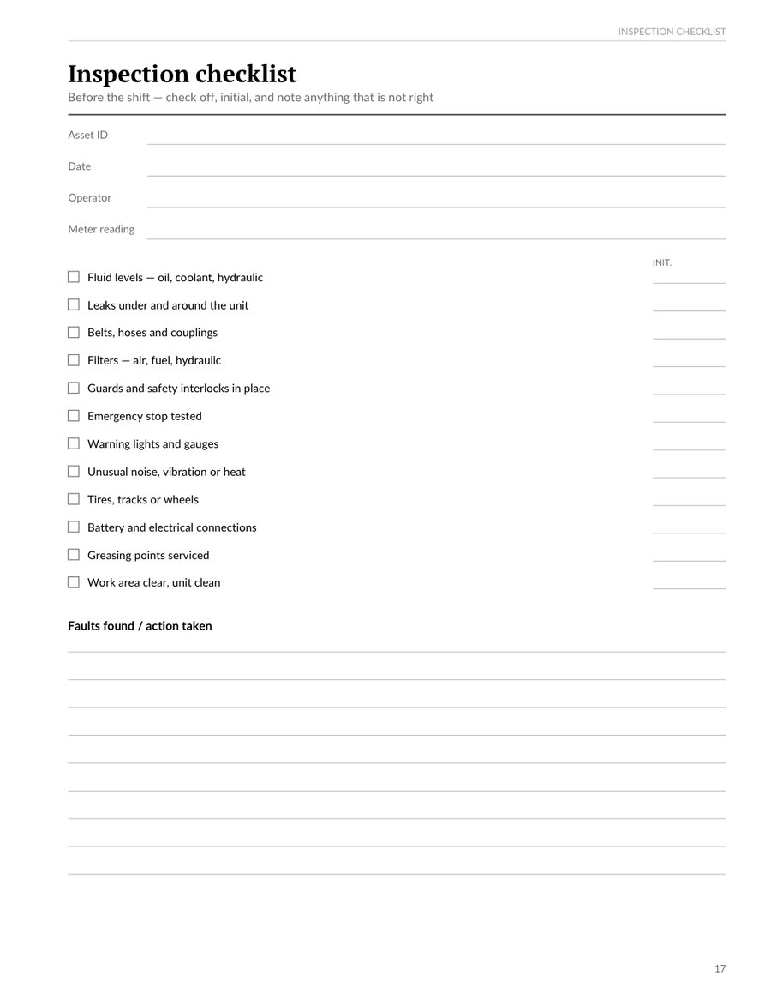
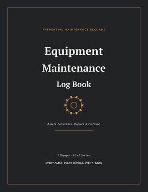
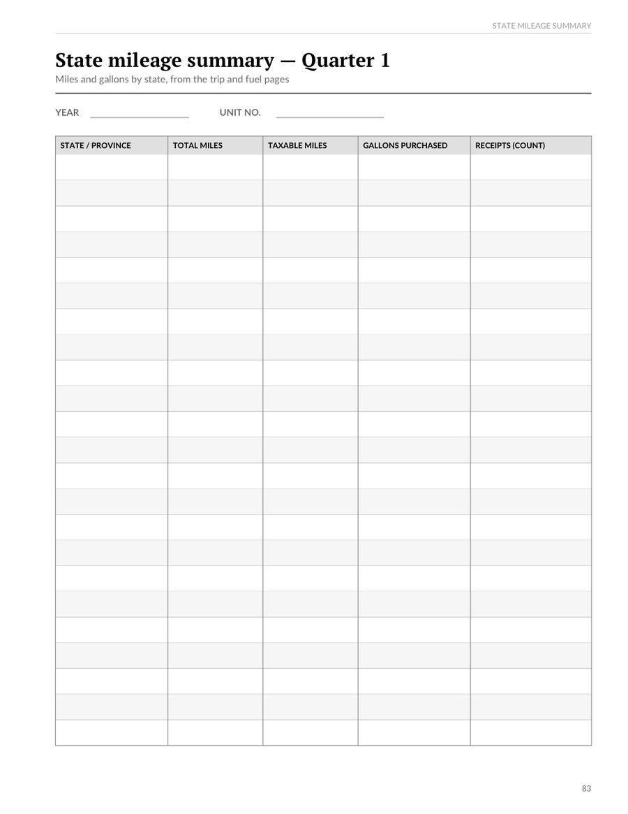

HVAC Service Call and Refrigerant Log Sheet
From the HVAC Technician Service Log Book
Two pages from the Equipment Maintenance Log Book: the preventive maintenance schedule and a shift inspection checklist.



An equipment register, preventive maintenance schedule, shift inspection checklists, 48 pages of service records and a cost and downtime summary per asset. 120 large 8.5 x 11 inch pages.

From the HVAC Technician Service Log Book

From the Trucker's Fuel and Mileage Log Book